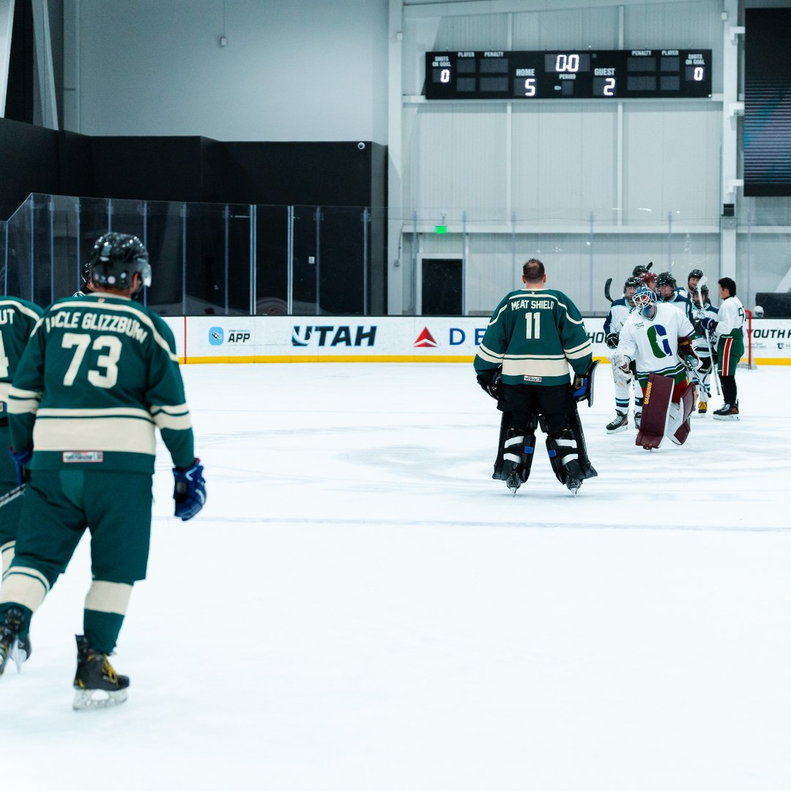

Nobody hands you a rulebook when you show up to your first beer league game. There's the official rulebook — offsides, icing, penalty minutes — and then there's the other one. The one nobody prints because everyone's just supposed to already know it. An estimated 174,000-plus adults play beer league hockey across North America, spanning every age from 21 to 70-something, and somehow this code holds together across all of it. Break it once and you'll find out fast. Here's the version nobody told you.
This is as close to sacred as beer league gets. Three goals in a game means the next round at the bar — or the cooler in the parking lot — is on you. It doesn't matter if your team lost 6–5. The hat trick tax is non-negotiable, and trying to weasel out of it is a chirping offense that will follow you for seasons.
Up 8–1 with five minutes left? This isn't the moment to keep the forecheck on full blast. Good beer league etiquette means backing off once a game is decided — move pucks around, work on passing, let your bench players get extra shifts. Padding your personal stat line against an outmatched team is how you become the guy nobody wants on their team next season.
Beer league rosters run thin. A lot of teams dress 10–12 skaters and a goalie, which means one no-show doesn't just hurt — it can force a forfeit. Paying your league fees and team dues on time, and actually showing up for the games you commit to, is the single most important form of respect you owe your teammates. It's boring advice. It's also the rule people break the most and complain about the loudest when someone else breaks it.
Most beer leagues are no-check or light-contact by the actual rulebook. But even in leagues that allow some contact, there's an unwritten line: you don't lay out the guy who's obviously brand new, obviously older, or obviously not built for it. Play the puck. Compete hard. Just read the room — this is rec hockey, not a scouting combine.

Win, lose, or brutal 9–2 disaster — you shake hands after the game, and you mean it. Skipping the line or half-assing it is one of the fastest ways to become the villain of the whole league's group chat. Beer league has no playoffs that matter to anyone outside the room; the handshake line is basically the entire point.
Every team has a group chat, and every group chat eventually has a moment where something needs to be said face-to-face instead of typed in all caps at 11 p.m. Line disputes, ice-time complaints, that one guy who's always late — handle it in the room or over a beer, not in a thread everyone including the goalie's cousin can see.
Every roster has someone in their first season ever on skates. The unwritten rule: you pass to them, you talk them through positioning between whistles, and you absolutely do not chirp them for a bad pinch in front of the other team. We wrote a whole breakdown of how beer league skill divisions work — but the culture rule underneath all of it is simpler: today's liability is next season's dependable third-liner, if people are decent to them now.
Beer league officials are frequently doing this for beer-league money on a weeknight after their own day job. They will miss calls. Arguing a marginal penalty is fine within reason; berating a volunteer-adjacent official over a beer league infraction is not a good look, no matter how right you are.
None of this is written into any league's official bylaws. It's passed down the same way most hockey culture is — locker room to locker room, team to team, one slightly awkward moment at a time where someone breaks a rule they didn't know existed and everyone else realizes they need to say something. If you want the cast of characters who actually enforce this stuff without ever saying it out loud, our breakdown of the 10 types of guys in every beer league locker room is the natural next read.
The fastest way to actually absorb beer league etiquette is to get on a bench and pick it up in real time. The Utah Glizzies welcome new players who are ready to learn the unwritten rules the honest way.
How to Join Go to The PitBeer league hockey runs on two rulebooks: the one the league hands you, and the one nobody writes down but everyone enforces. Learn the second one fast, and the locker room stops feeling like a test you didn't study for and starts feeling like exactly what it's supposed to be — a genuinely good time with people who'd rather chirp you than actually be mad at you.